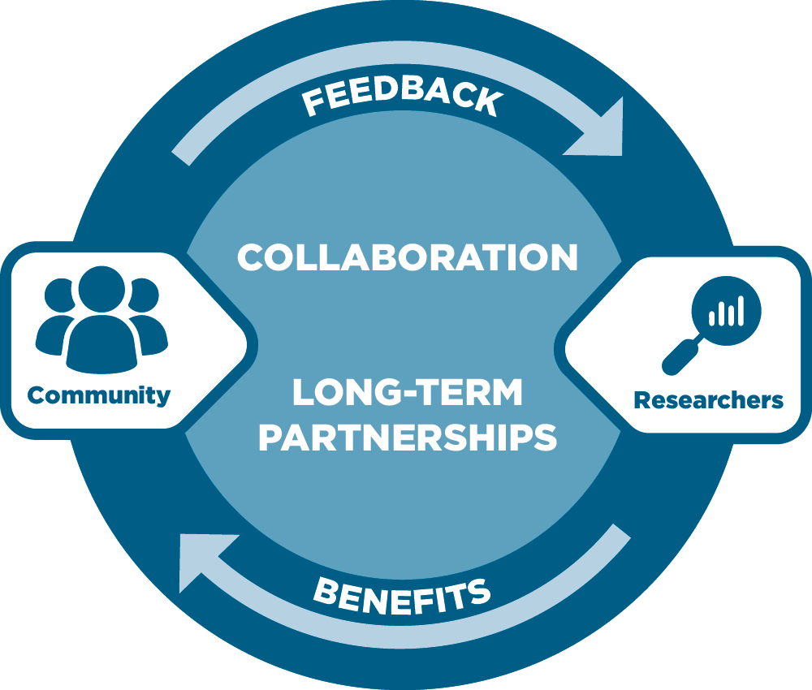

CAB representation across the region
CAB members bring local experience, trusted relationships, and state-level representation from Alabama, Mississippi, and Louisiana.
The Community Engagement Core works through the CAB, community partners, and local relationships to keep community priorities visible and connected to the center’s outreach, resources, and collaboration efforts.
CAB members bring local experience, trusted relationships, and state-level representation from Alabama, Mississippi, and Louisiana.
The CAB helps shape how Forge AHEAD explains its work, builds partnerships, and responds to community needs in practical ways.
Resources, updates, and community spotlights are shared in plain language so the work remains accessible and useful beyond the center itself.
Our model is built around collaboration between communities and researchers, with feedback and shared benefits flowing in both directions over time.

Forging Community centers local voice in the design and delivery of health-focused programs, practical tools, and research partnerships that address diabetes, obesity, and hypertension.
Forge AHEAD is working toward a region where communities can access useful information, trusted relationships, and opportunities to help shape healthier futures.
Member directory, review role, meeting archive, and submission process.
Open CAB pageHow organizations connect with Forge AHEAD and contribute to community-centered work across the region.
View partnersSpotlights on local organizations and the micro-grant projects they are leading in their communities.
View micro-grant projectsToolkits, summaries, updates, and event content organized for community audiences.
Browse resourcesForge AHEAD works to keep community priorities connected to its public-facing work. Local knowledge helps shape how programs, partnerships, and community information are explained and shared back in useful ways.